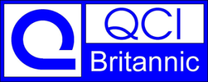
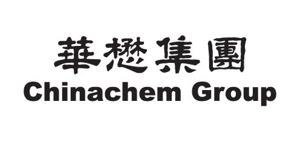

SOBRE NÓS
Trabalhamos com uma extensa variedade de produtos em diversos segmentos e, também temos produtos de produção própria.
Atuamos nas seguintes áreas de mercado:
Alimentício, Agrícola, Cerâmica, Cosméticos, Couros, Domissanitários, Lavanderia, Papel e Celulose, Sucro Alcool, Têxtil, Tintas e Vernizes.
PARCEIROS
Auxiliares para tintas como antisedimentantes, dióxido de titânio.
Aditivos alimentares.

Missão do Distribuidor
O Distribuidor é o principal fornecedor de produtos Químicos e Petroquímicos para a pequena e média indústria. Fornece produtos para todas as regiões geográficas do país independentemente das quantidades - de um tambor ao caminhão tanque.
Através de recursos humanos qualificados presta assistência técnica ao micro e pequeno industrial tanto na aplicação como na indicação de melhor performance.
Desenvolve e divulga junto ao segmento micro, pequeno e médio, as novas tecnologias em produtos e suas aplicações, de acordo com normas internacionais de qualidade.
Oferece produtos e serviços aos consumidores industriais, agregando valor através da especialização em vendas - conhece o mercado, o produto e suas aplicações, respeita a legislação, busca a melhoria contínua, tornando a distribuição o maior canal de vendas.
Valores:
- Ética
- Respeito as legislações
- Responsabilidade sócio-ambiental
- Cooperação com todos os elos da cadeia produtiva
Com o objetivo de consolidar e estabelecer padrões de conduta moral e profissional para as associadas, inspirando o respeito aos princípios éticos da responsabilidade social e boa governança corporativa, a ASSOCIQUIM / SINCOQUIM tomaram a iniciativa de adotar um Código de Ética que se aplica a todos os executivos, membros da Diretoria, dos Comitês, dos Grupos de Trabalho, Consultores e empregados da ASSOCIQUIM / SINCOQUIM, bem como às suas associadas e respectivos colaboradores.
O Código de Ética visa também proteger as entidades, os direitos das empresas associadas e balizar seus deveres dentro dos princípios éticos que devem reger as nossas atividades e as relações das empresas.
A Associação Brasileira dos Distribuidores de Produtos Químicos e Petroquímicos, fundada em 1960, é a entidade que representa as empresas que fazem o link entre os grandes produtores dos insumos e os grandes, pequenos e médios fabricantes de produtos químicos e petroquímicos. As empresas associadas processam, formulam, misturam, reembalam, estocam, transportam e comercializam estes produtos exclusivamente para clientes industriais.
A ASSOCIQUIM possui mais de 100 empresas associadas, em sua maioria pequenas empresas, embora conte também com grandes empresas multinacionais em seu quadro associativo.